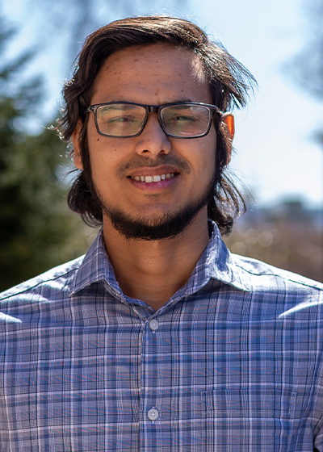
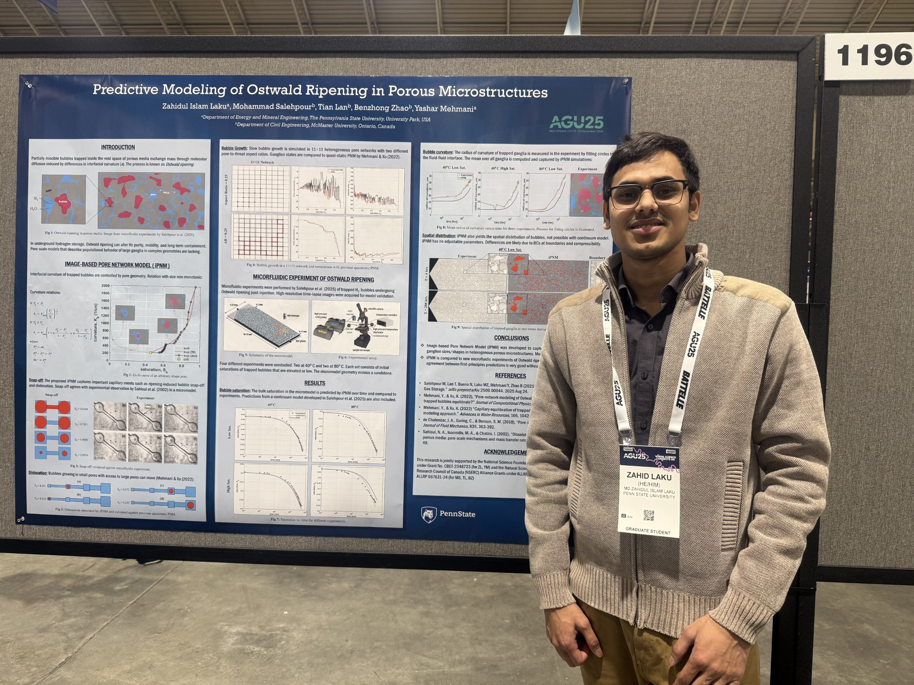

CV (PDF) ↓Md Zahidul Islam Laku
I'm a PhD student at Penn State University, majoring in Energy and Mineral Engineering with a minor in Computational Sciences. I work in the Mehmani Research Group on porous media physics, where I study capillary-dominated bubble dynamics in porous microstructures. My research connects to underground hydrogen storage, CO2 sequestration, and the design of efficient fuel cells and electrolyzers. Outside research, I love to spare my time on music and mathematics, where notes and numbers blur together to form something surreal yet elegantly logical!!
Recent Updates
Awarded the Serena DiMagno Memorial Scholarship (WWOAP)
I was selected to receive the Serena DiMagno Memorial Scholarship from the Water Works Operators' Association of Pennsylvania (WWOAP), recognizing academic excellence and contributions to the water and environmental engineering field.

Presented poster on Ostwald ripening in porous media
I presented a poster at AGU 2025 on curvature-driven evolution of trapped bubble populations in porous microstructures, combining microfluidic experiments with an image-based pore-network model.
Received EME Outstanding Graduate Teaching Assistant Award
I was honored with the Outstanding Graduate Teaching Assistant Award by the Department of Energy and Mineral Engineering at Penn State, recognizing my contributions to teaching in Reservoir Modeling (PNG 430) and Special Topics (PNG 497).